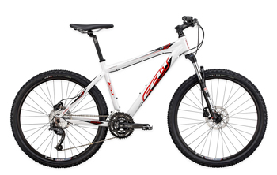

Price $1074 CND
No matter if you’re exploring a snow-covered trail in the dead of winter or cruising the beach under the heat of the summer sun, all-season cyclists will want to take a hard look at the Sasquatch. The fat bikes are designed to provide outstanding flotation on soft surfaces and carry adventurous riders out into wild places not normally accessible to bicycles. With 4” and 4.8" tires, fat bikes can float through snow, sand, mud and other variable terrain, opening the door to mid-winter expeditions or epic beach rides. Lightweight, designed aluminum frames balance efficiency with comfort, and are sturdy, stable and surprisingly maneuverable. Now with a 24” option for little ones, and an electric assist BionX model, anyone can find adventure in places where bikes rarely go.
 take a hard look SasquatchSpecs Frame alloy frame with taper suspension Fork Rockshox Bluto RL 100mm solo air 15mm Rear Shock Blue Spec RL 100mm air trim 15mm Drivetrains Shifter Front Simano SLX M670 rapid fire 3 Shifter Rear Shimano SLX M670 rapid fire 10 Shifter Casing Jagwire LEX housing Seat Set Up Seat Post Norco Lite 3D forged doubel bolt 2014 alloy 30.9 Seat Post Clamp Norco aluminum MTB / XC clamp 35 mm Saddle Norco MTB XC Trail saddle w/chromoly rail
